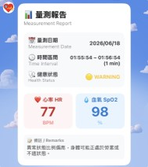

PulseGuard AIoT
基於 FreeRTOS 與 Streamlit 的雙軌制智慧心率血氧遠端監控系統 A dual-track smart heart rate and SpO2 remote monitoring system based on FreeRTOS and Streamlit.

基於 FreeRTOS 與 Streamlit 的雙軌制智慧心率血氧遠端監控系統 A dual-track smart heart rate and SpO2 remote monitoring system based on FreeRTOS and Streamlit.
利用 ESP32 與 MAX30102 感測器高頻採樣。 High-frequency sampling using ESP32 and MAX30102 sensor.
FreeRTOS 雙核架構，分離採樣與網絡通訊。 Dual-core FreeRTOS architecture separating sensing and networking.
EMA 平滑演算法與雙軌制異常判定邏輯。 EMA smoothing algorithm with dual-track health evaluation logic.
Streamlit 儀表板與 LINE 自動異常通報。 Streamlit dashboard with automated LINE alert notifications.

# 安裝後端與儀表板依賴
pip install -r backend/requirements.txt -r analytics/requirements.txt# 終端機 A: 啟動 MQTT 數據流處理器 (負責保存至 MongoDB)
python backend/stream_processor.py
# 終端機 B: 啟動 Streamlit 視覺化儀表板
streamlit run analytics/app.py# 生成 6 個月的模擬歷史數據進行展示
python backend/generate_mock_data.py